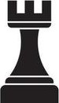
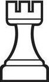
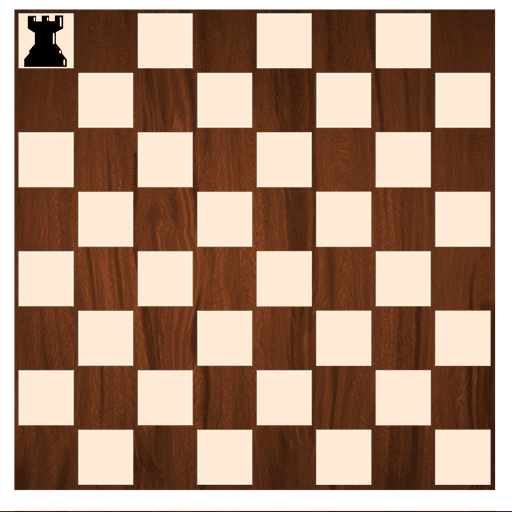

 |
 |
|---|
 |
|---|
La torre es una de las piezas más poderosas en el ajedrez, conocida por su capacidad
para controlar filas y columnas completas del tablero. Se mueve en línea recta, ya sea
horizontal o verticalmente, sin límites en la distancia, lo que le permite dominar
amplias áreas y ejercer presión sobre el oponente.
Cada jugador comienza con dos torres, que se colocan en las esquinas del tablero. Su
fuerza radica en su alcance y en la capacidad de coordinarse con otras piezas,
especialmente en el final del juego. La torre es esencial para realizar ataques
estratégicos y para defender la posición del rey. Con su gran movilidad, es una pieza
clave para el control del tablero.